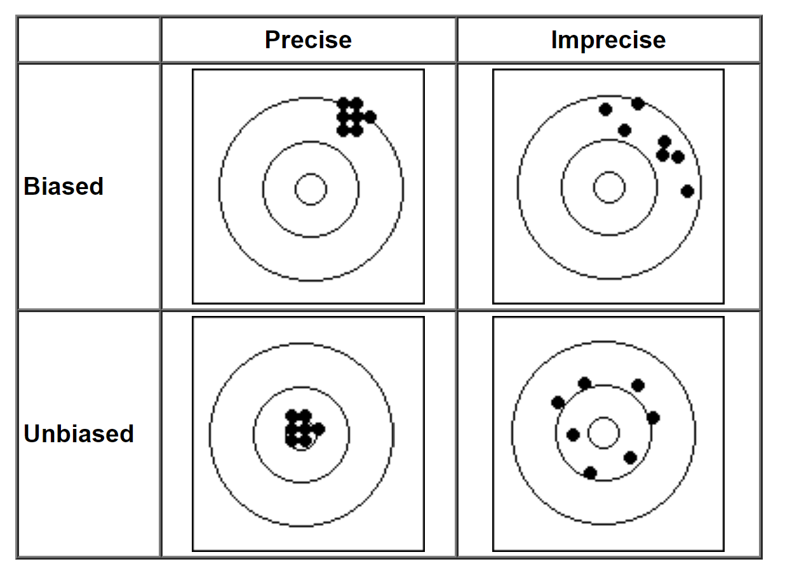
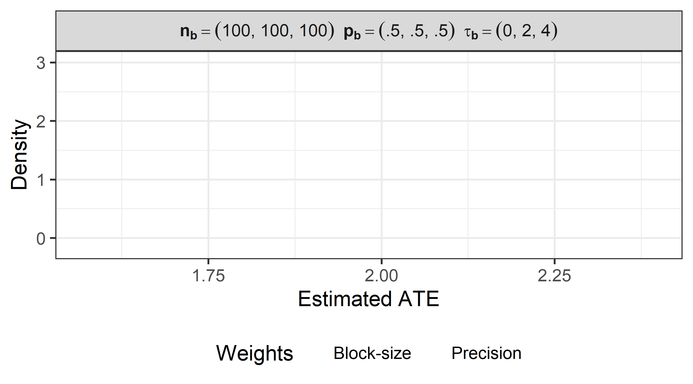
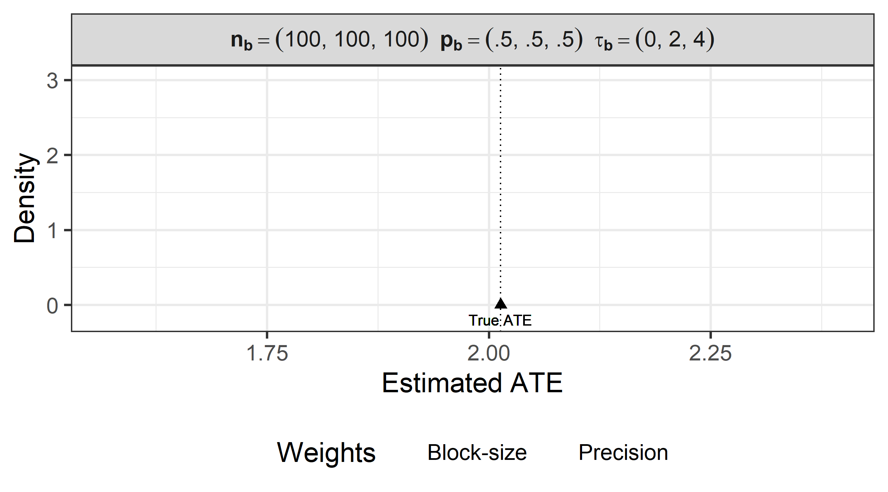
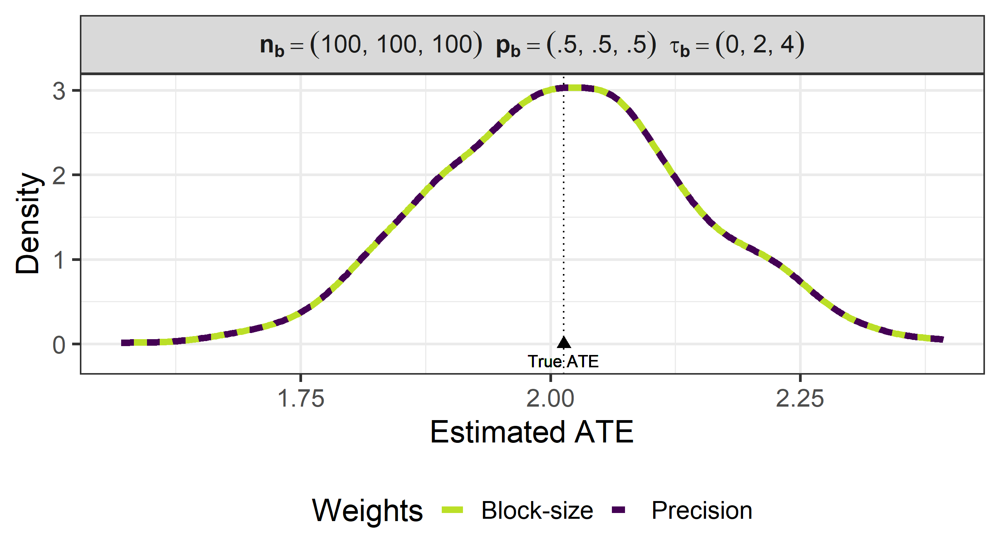
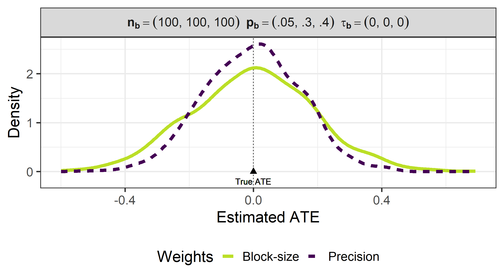
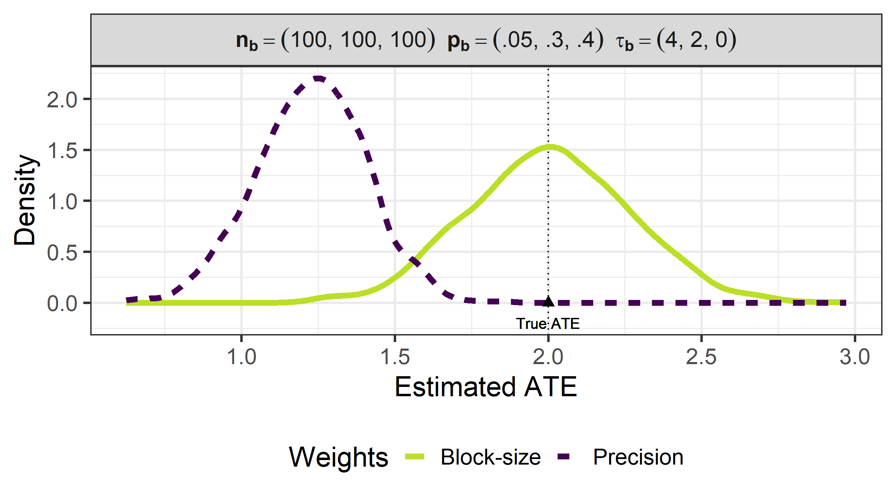

# Packages
library(tidyverse)
## ── Attaching core tidyverse packages ──────────────────────── tidyverse 2.0.0 ──
## ✔ dplyr 1.1.2 ✔ readr 2.1.4
## ✔ forcats 1.0.0 ✔ stringr 1.5.0
## ✔ ggplot2 3.5.1 ✔ tibble 3.2.1
## ✔ lubridate 1.9.2 ✔ tidyr 1.3.0
## ✔ purrr 1.0.1
## ── Conflicts ────────────────────────────────────────── tidyverse_conflicts() ──
## ✖ dplyr::filter() masks stats::filter()
## ✖ dplyr::lag() masks stats::lag()
## ℹ Use the conflicted package (<http://conflicted.r-lib.org/>) to force all conflicts to become errors
library(DeclareDesign)
## Loading required package: randomizr
## Loading required package: fabricatr
## Loading required package: estimatr
##
## Attaching package: 'DeclareDesign'
##
## The following object is masked from 'package:dplyr':
##
## vars
##
## The following object is masked from 'package:ggplot2':
##
## vars
library(kableExtra)
##
## Attaching package: 'kableExtra'
##
## The following object is masked from 'package:dplyr':
##
## group_rows
# Data
load("block_dd_sims.rda")
# ggplot global options
theme_set(theme_bw(base_size = 20))
### RECODING ###
# Make better labels for parameters
sims$nb <- gsub("c(", "(`", sims$nb, fixed = TRUE)
sims$pb <- gsub("c(", "(`", sims$pb, fixed = TRUE)
sims$taub <- gsub("c(", "(`", sims$taub, fixed = TRUE)
sims$pb <- gsub("0.", ".", sims$pb, fixed = TRUE)
sims$taub <- gsub("0.", ".", sims$taub, fixed = TRUE)
sims$nb <- gsub(")", "`)", sims$nb, fixed = TRUE)
sims$pb <- gsub(")", "`)", sims$pb, fixed = TRUE)
sims$taub <- gsub(")", "`)", sims$taub, fixed = TRUE)
sims <- sims %>%
mutate(nb = paste("bold(n[b]) == ", nb, sep = ""),
pb = paste("bold(p[b]) == ", pb, sep = ""),
taub = paste("bold(tau[b]) == ", taub, sep = ""),
title = paste(nb, pb, taub, sep = "~~"))
# convert estimand into mean estimand
sims <- sims %>%
group_by(nb, pb, taub) %>%
mutate(estimand0=estimand,
estimand = mean(estimand,na.rm=TRUE)) %>% ungroup()When Should We Use Biased Estimators of the Average Treatment Effect?
Jake Bowers
University of Illinois at Urbana-Champaign jakebowers.org
Gustavo Diaz
McMaster University
gustavodiaz.org
Christopher Grady
USAID
usaid.gov
Bias-variance tradeoff as darts

But the game of darts is more complicated


. . .
Different players different winning strategies
Argument: The same is true for experiments
Credibility revolution Emphasis on unbiasedness
But in practice we use biased estimators routinely
(e.g. regression with controls)Which implies sacrificing unbiasedness to gain precision
. . .
When should we prefer biased yet more precise estimators of the ATE?
. . .
Short answer: When bias is small enough
Long answer: This paper
- Use simulations to navigate this tradeoff before conducting an experiment
Long answer: This paper
Use simulations to navigate this tradeoff in each context before conducting an experiment
Focus on:
Block randomization
M-Estimation
Application: GSA Auctions Experiment
Long answer: This paper
Use simulations to navigate this tradeoff in each context before conducting an experiment
Focus on:
Block randomization
M-Estimation
Application: GSA Auctions Experiment
Block randomization setup
\(n\) units grouped in \(B\) blocks, \(n_b\) units per block
Assign \(m_b\) to treatment and \((n_b - m_b)\) to control
. . .
- Block-level ATE estimator:
\[ \hat{\tau}_b = \frac{\sum_{i \in t} Y_{ib}}{m_b} - \frac{\sum_{i \in c} Y_{ib}}{(n_b - m_b)} \]
. . .
How to aggregate set of \(\hat{\tau}_b\) for \(b = 1, ..., B\) to estimate overall ATE?
Choosing weights
- Weighted average across blocks:
\[ \hat{\tau}_{wt} = \frac{1}{B} \sum_{b=1}^B w_b \hat{\tau}_b \]
Two approaches
- Weighted average across blocks:
\[ \hat{\tau}_{wt} = \frac{1}{B} \sum_{b=1}^B \boldsymbol{\color{#ac1455}{w_b}} \hat{\tau}_b \]
Two approaches
- Weighted average across blocks:
\[ \hat{\tau}_{wt} = \frac{1}{B} \sum_{b=1}^B \boldsymbol{\color{#ac1455}{w_b}} \hat{\tau}_b \]
Block-size weights
\(w_b = \frac{n_b}{n}\)
Unbiased even in wild cases
Sometimes imprecise
Precision weights
\(w_b = \frac{1}{n_b p_b (1-p_b)}\)
\(p_b\): proportion of treated units per block
Equivalent to OLS with fixed effects
Usually Biased but sometimes more precise
Simulation setup
Three blocks
Fix block size \(n_b = (100, 100, 100)\)1
Constant and varied \(p_b\)
Constant and varied true effects \(\tau_b\)
(standard deviations of outcome)Simulate 1,000 experiments for each parameter combination
Equal \(\boldsymbol{p_b}\)
equal_pb = sims %>% ungroup() %>%
filter(estimator %in% c("Precision","Block-size") &
nb == "bold(n[b]) == (`100, 100, 100`)") %>%
filter(pb=="bold(p[b]) == (`.5, .5, .5`)" &
taub=="bold(tau[b]) == (`0, 2, 4`)")
ggplot(equal_pb) +
aes(x = estimate, color = estimator, linetype = estimator) +
geom_vline(aes(xintercept = estimand), linetype = "dotted", alpha = 0) +
geom_line(size = 2, stat = "density", alpha = 0) +
theme(legend.position = "bottom") +
geom_point(aes(x = estimand, y = 0), shape = 17, size = 3,
show.legend = FALSE, color = "black", alpha = 0) +
geom_text(aes(x = estimand, y = 0, label = "True ATE"),
nudge_y = -.2, show.legend = FALSE, color = "black", alpha = 0) +
facet_wrap(~ title, scales = "free_x", label = label_parsed) +
scale_color_viridis_d(begin = 0.9, end = 0) +
labs(x = "Estimated ATE", y = "Density",
linetype = "Weights", color = "Weights")
## Warning: Using `size` aesthetic for lines was deprecated in ggplot2 3.4.0.
## ℹ Please use `linewidth` instead.
Equal \(\boldsymbol{p_b}\)
ggplot(equal_pb) +
aes(x = estimate, color = estimator, linetype = estimator) +
geom_vline(aes(xintercept = estimand), linetype = "dotted") +
geom_line(size = 2, stat = "density", alpha = 0) +
theme(legend.position = "bottom") +
geom_point(aes(x = estimand, y = 0), shape = 17, size = 3,
show.legend = FALSE, color = "black") +
geom_text(aes(x = estimand, y = 0, label = "True ATE"),
nudge_y = -.2, show.legend = FALSE, color = "black") +
facet_wrap(~ title, scales = "free_x", label = label_parsed) +
scale_color_viridis_d(begin = 0.9, end = 0) +
labs(x = "Estimated ATE", y = "Density",
linetype = "Weights", color = "Weights")
Equal \(\boldsymbol{p_b}\)
ggplot(equal_pb) +
aes(x = estimate, color = estimator, linetype = estimator) +
geom_vline(aes(xintercept = estimand), linetype = "dotted") +
geom_line(size = 2, stat = "density") +
theme(legend.position = "bottom") +
geom_point(aes(x = estimand, y = 0), shape = 17, size = 3,
show.legend = FALSE, color = "black") +
geom_text(aes(x = estimand, y = 0, label = "True ATE"),
nudge_y = -.2, show.legend = FALSE, color = "black") +
facet_wrap(~ title, scales = "free_x", label = label_parsed) +
scale_color_viridis_d(begin = 0.9, end = 0) +
labs(x = "Estimated ATE", y = "Density",
linetype = "Weights", color = "Weights")
Different \(\boldsymbol{p_b}\), constant \(\boldsymbol{\tau_b}\)
constant = sims %>% ungroup() %>%
filter(estimator %in% c("Precision","Block-size") &
nb == "bold(n[b]) == (`100, 100, 100`)") %>%
filter(pb=="bold(p[b]) == (`.05, .3, .4`)" &
taub=="bold(tau[b]) == (`0, 0, 0`)")
ggplot(constant) +
aes(x = estimate, color = estimator, linetype = estimator) +
geom_vline(aes(xintercept = estimand), linetype = "dotted") +
geom_line(size = 2, stat = "density") +
theme(legend.position = "bottom") +
geom_point(aes(x = estimand, y = 0), shape = 17, size = 3,
show.legend = FALSE, color = "black") +
geom_text(aes(x = estimand, y = 0, label = "True ATE"),
nudge_y = -.2, show.legend = FALSE, color = "black") +
facet_wrap(~ title, scales = "free_x", label = label_parsed) +
scale_color_viridis_d(begin = 0.9, end = 0) +
labs(x = "Estimated ATE", y = "Density",
linetype = "Weights", color = "Weights")
Different \(\boldsymbol{p_b}\), heterogeneous \(\boldsymbol{\tau_b}\)
het = sims %>% ungroup() %>%
filter(estimator %in% c("Precision","Block-size") &
nb == "bold(n[b]) == (`100, 100, 100`)") %>%
filter(pb=="bold(p[b]) == (`.05, .3, .4`)" &
taub=="bold(tau[b]) == (`4, 2, 0`)")
ggplot(het) +
aes(x = estimate, color = estimator, linetype = estimator) +
geom_vline(aes(xintercept = estimand), linetype = "dotted") +
geom_line(size = 2, stat = "density") +
theme(legend.position = "bottom") +
geom_point(aes(x = estimand, y = 0), shape = 17, size = 3,
show.legend = FALSE, color = "black") +
geom_text(aes(x = estimand, y = 0, label = "True ATE"),
nudge_y = -.2, show.legend = FALSE, color = "black") +
facet_wrap(~ title, scales = "free_x", label = label_parsed) +
scale_color_viridis_d(begin = 0.9, end = 0) +
labs(x = "Estimated ATE", y = "Density",
linetype = "Weights", color = "Weights")
Blocking takeaways
b_take = data.frame(
pb = c("Constant/similar", rep("Different", 2)),
tb = c("Any", "Constant/similar", "Heterogeneous"),
wt = c("Either", "Precision", "Block-size")
)
colnames(b_take) = c("\\(\\boldsymbol{p_b}\\)",
"\\(\\boldsymbol{\\tau_b}\\)",
"Best weighting scheme")
b_take %>%
kbl(escape = FALSE)| \(\boldsymbol{p_b}\) | \(\boldsymbol{\tau_b}\) | Best weighting scheme |
|---|---|---|
| Constant/similar | Any | Either |
| Different | Constant/similar | Precision |
| Different | Heterogeneous | Block-size |
. . .
Lessons:
Aim for equal proportion treated across blocks if possible
Otherwise, pre-specify adaptive rules
Conclusion
Decide whether sacrificing unbiasedness is worth the precision gain before conducting an experiment
Incorporate knowledge of context and research design
Specify adaptive rules for elements beyond control
. . .
Next steps
Formalize bias expressions for weighted estimators
Apply to GSA experiment with many blocks, skewed distribution of outcomes
Footnotes
Takeaway is the same when block sizes differ.↩︎